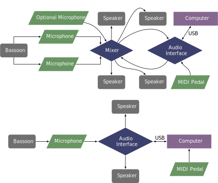

This piece was commissioned by Cathey Falvo through the ICElab program and was premiered in 2010 by Rebekah Heller. The piece can be obtained by contacting the composer at his website.
The setup for this piece is a little different from other pieces using Max/MSP, as the final section of the piece calls for playing an audio file from a cell phone and modulating the overtones of the file by using the performer's embouchure. The bassoon should be captured using two microphones that are mixed together before being sent to the computer using an aux send on the mixer. This signal should go into an audio interface connected to a computer. Depending on the placement of the two microphones for the bassoon, an additional vocal microphone may be needed to amplify the cell phone sound at the end of the piece. Finally, the sound can be played in a stereo format or a quad speaker format. When played with live processing, a volume pedal or MIDI expression pedal is also necessary.
A possible setup using four speakers and three microphones is shown below, as well as a simpler stereo setup with a single microphone. 
This piece can be performed in two different ways. The first is to use live processing, and the second is to use prerecorded samples of Rebekah Heller playing with the live processed version(in this case, "Pre-recorded bassoon, Rebekah Heller" must be included in the program). This fixed media version can be performed in Max/MSP or Qlab. Unfortunately, the live processing patch depends on 32-bit externals, which are becoming obsolete, especially on Mac OS X. However, the fixed media version still runs on current systems. Patches for live processing, stereo fixed media, and quad fixed media are shown in the screenshot section.
For all versions of the patch, the performer or patch operator should press the sound icon to turn on the audio system. In the live processing patch, the buttons for stereo or quad should be pressed according to the setup being used, and then pressing the button that says INIT under the audio button. The patch can be advanced with the spacebar or with a MIDI value of 127 sent on controller 64. Various levels can be adjusted using the provided sliders.
This piece is probably too difficult from a technical standpoint for undergraduate students. The upper register is used frequently, and the rhythms are complex. The piece also calls for extremely high notes that are not part of traditional fingering charts, such as the A flat above the treble clef staff. Fingerings are not provided for these notes or any of the multiphonics. The notation is also engraved by hand, which makes reading the notation more challenging. The electronics part is not too demanding, as the cues change relatively infrequently. However, this piece is best left for graduate students and professionals.
This piece is very much in the avant-garde style, featuring timbral fingerings and multiphonics, and would likely be poorly received by audiences unaccustomed to avant-garde music.
©2024 by Benjamin Bradshaw
Logo ©2024 by Hannah Bradshaw